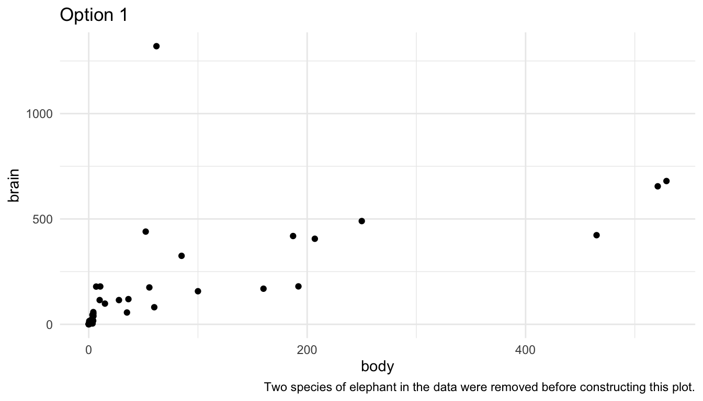
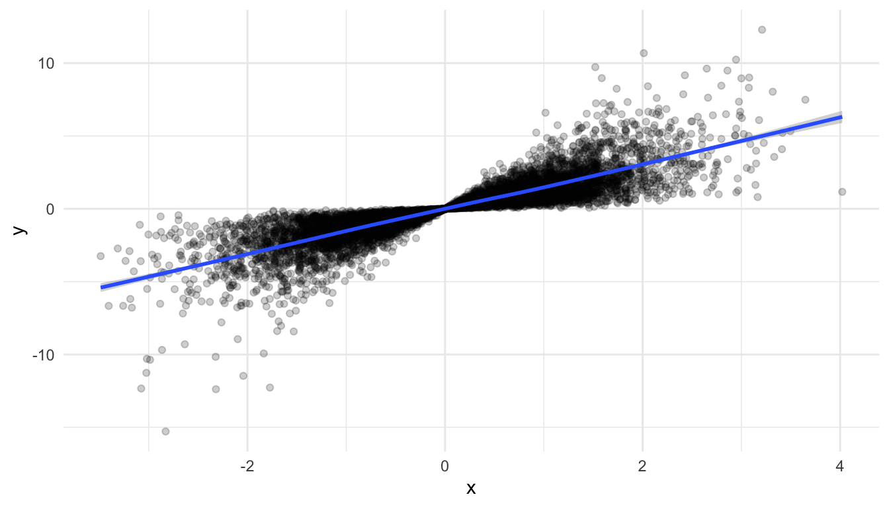
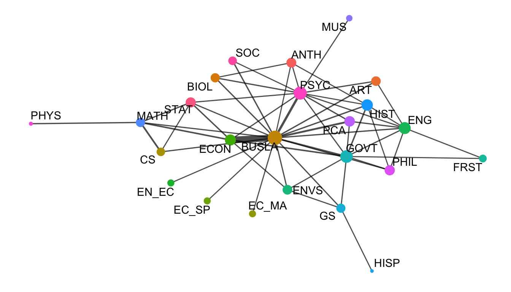

library(MASS)
library(tidyverse)
theme_set(theme_minimal())
ggplot(data = mammals, aes(x = body, y = brain)) +
geom_point()
The purpose of this section is to discuss a few common issues with visualizing data that have not come up in previous examples. The section is not a “catch-all” for all visualization topics; instead, the purpose is to discuss a few topics that come up relatively frequently.
Visualizations when there are large outliers present can be challenging. On the one hand, removing an outlier from a visualization for no reason besides “it’s an outlier” eliminates an otherwise perfectly valid data point. On the other hand, including the outlier can make the visualization essentially meaningless for all of the other points.
Let’s look at this issue with an example. You may have worked with the mammals data set (or something similar) in STAT 213 to investigate statistical transformations for modeling. A scatterplot of mammal brain weight vs. mammal body weight is given below. The outliers here are two species of elephants included in the data set.
library(MASS)
library(tidyverse)
theme_set(theme_minimal())
ggplot(data = mammals, aes(x = body, y = brain)) +
geom_point()
We can see the issue: the visualization tells us that there are two large outliers, but that’s about it. We can’t distinguish the values for most of the other mammals in the data set.
There are a few strategies to deal with such outliers. First, you could remove them and state in a figure caption that you removed them.
ggplot(data = mammals |> filter(body <= 600), aes(x = body, y = brain)) +
geom_point() +
labs(caption = "Two species of elephant in the data were removed before constructing this plot.",
title = "Option 1")
Second, you could use use axis breaks:
## install.packages("ggbreak")
library(ggbreak)
ggplot(data = mammals, aes(x = body, y = brain)) +
geom_point() +
scale_x_break(breaks = c(750, 2500, 2700, 6400)) +
labs(title = "Option 2")Note: I can no longer get the above code to run, nor can I run any of the examples that ggbreak provides in their documentation. I always get the error Error in Ops.data.frame(guide_loc, panel_loc) : ‘==’ only defined for equally-sized data frames.
You could do some things to make this plot look a little nicer, but I personally do not like scale breaks. I think they make the plot look confusing and potentially misleading as the reader has to pay really close attention to the x-axis to interpret the plot correctly.
A third option is to do exactly what you would have done in STAT 213: perform a statistical transformation of the data. This has exactly the same benefits and drawbacks as it did in modeling: your model/plot works a lot better at the cost of interpretation. The following uses the scale_x_log10() and scale_y_log10() to plot a log-log transformation of brain vs. body weight.
library(MASS)
ggplot(data = mammals, aes(x = body, y = brain)) +
geom_point() +
scale_x_log10() +
scale_y_log10() +
labs(title = "Option 3")
The scales on the x and y-axis now increase multiplicatively. So, they are in general a bit harder for any reader to interpret.
We can also figure out how to display a natural log transformation (like you probably would have done in STAT 213), but that is a fair bit of work. When making this graph, this stack overflow post helped me out: https://stackoverflow.com/questions/43702945/making-an-axis-give-natural-log-instead-of-log10-when-log-y-in-r-plot
library(scales)
ggplot(data = mammals, aes(x = body, y = brain)) +
geom_point() +
scale_y_continuous(trans = log_trans(),
breaks = trans_breaks("log", function(x) exp(x)),
labels = trans_format("log", math_format(e ^ .x))) +
scale_x_continuous(trans = log_trans(),
breaks = trans_breaks("log", function(x) exp(x)),
labels = trans_format("log", math_format(e ^ .x)))Line plots are useful when you are interested in exploring the relationship between two quantitative variables and the quantitative variable on the x-axis only has one y value for each x value (or, if also graphing a categorical variable, one y value for each x value in for each level of the categorical variable). One instance where this commonly arises is for an x-axis variable of some measure of time.
For example, in the babynames data set from the babynames R package, there are variables year, sex, name, and n (number of babies). In each row, the n value is the number of births of babies with that particular name of that sex in that year.
library(babynames)
babynames
#> # A tibble: 1,924,665 × 5
#> year sex name n prop
#> <dbl> <chr> <chr> <int> <dbl>
#> 1 1880 F Mary 7065 0.0724
#> 2 1880 F Anna 2604 0.0267
#> 3 1880 F Emma 2003 0.0205
#> 4 1880 F Elizabeth 1939 0.0199
#> 5 1880 F Minnie 1746 0.0179
#> 6 1880 F Margaret 1578 0.0162
#> # ℹ 1,924,659 more rowsIf we want to plot the number of births (n) for a particular name, we might consider a line plot instead of a point plot:
baby_matt <- babynames |> filter(name == "Matthew" & sex == "M")
ggplot(data = baby_matt, aes(x = year, y = n)) +
geom_line()
The baby_matt data set has one y value (one n value) for each x value (year), so a line plot makes sense. We can also construct a line plot with different colours for different names. Again, for each level of name, there is only one y-value for each x-value so a line plot makes sense.
baby_friends <- babynames |> filter(name == "Monica" & sex == "F" |
name == "Phoebe" & sex == "F" |
name == "Rachel" & sex == "F" |
name == "Ross" & sex == "M" |
name == "Joseph" & sex == "M" |
name == "Chandler" & sex == "M")
ggplot(data = baby_friends, aes(x = year, y = n)) +
geom_line(aes(colour = name)) +
scale_colour_brewer(palette = "Accent")
Area plots are an alternative to line plots, most often used for time series data. Like line plots, they are useful when you have a single \(y\) per unit of \(x\) (as is often the case with time) and when you want to examine the trend of \(y\) through \(x\) (again \(x\) is often time).
Area plots should only be used when there is a meaningful relationship to 0 for the response, \(y\), because the area between \(y\) and \(0\) will be shaded.
Because of this shading, area charts can be used to emphasize absolute gains and losses in the response. One common place where they would get used is to display a stock price through time.
The following code plots the now infamous GameStop stock through time by scraping stock data with the quantmod package:
library(quantmod)
library(lubridate)
start <- ymd("2011-01-01")
end <- ymd("2022-3-17")
getSymbols(c("GME", "SPY"), src = "yahoo",
from = start, to = end)
#> [1] "GME" "SPY"
date_tib <- as_tibble(index(GME)) |>
rename(start_date = value)
gme_tib <- as_tibble(GME)
spy_tib <- as_tibble(SPY)
all_stocks <- bind_cols(date_tib, gme_tib, spy_tib)
stocks_long <- all_stocks |>
dplyr::select(start_date, GME.Adjusted, SPY.Adjusted) |>
pivot_longer(2:3, names_to = "Stock_Type", values_to = "Price") |>
mutate(Stock_Type = fct_recode(Stock_Type,
GameStop = "GME.Adjusted",
`S & P 500` = "SPY.Adjusted"
))Compare the line and area charts for the Gamestop stock. Note the common trick to use the same colour and fill for geom_line() and geom_area(), but to decrease the transparency for geom_area().
stocks_gme <- stocks_long |> filter(Stock_Type == "GameStop")
ggplot(data = stocks_gme, aes(x = start_date, y = Price)) +
geom_line() +
theme_minimal()
ggplot(data = stocks_gme, aes(x = start_date, y = Price)) +
geom_line(colour = "blueviolet") +
geom_area(fill = "blueviolet", alpha = 0.3) +
theme_minimal()
And for the S and P 500:
stocks_spy <- stocks_long |> filter(Stock_Type == "S & P 500")
ggplot(data = stocks_spy, aes(x = start_date, y = Price)) +
geom_line() +
theme_minimal()
ggplot(data = stocks_spy, aes(x = start_date, y = Price)) +
geom_line(colour = "green4") +
geom_area(fill = "green4", alpha = 0.3) +
theme_minimal()Exercise 1. For the three options for graphing outliers (removal, axis breaks, transforming the data), which do you think is best for the mammal data set? Give a one sentence reason.
Exercise 2. In your filter() step for the babynames visualization, remove the sex == "F" or sex == "M" for one of the names. Why is a line plot no longer a good way to visualize the new data set.
Exercise 3. Construct an area plot that shows both the Gamestop stock price and the S and P 500 stock price, using different colours and fills for the two stocks. Why might a line plot be a better visualization for this example?
Hint: In your geom_area() function, adding a position = "identity" will allow both areas to “start” at 0.
A data set could be “large” if it has a very large number of observations (large n), if it has a very large number of variables (large p), or both. Let’s start by looking at a data set with a somewhat large number of observations, the diamonds data set in the ggplot2 package. The diamonds data set contains variables on characteristics of diamonds, like the diamond’s price, cut, clarity, carat, etc.
Let’s first check how many observations are actually in the data set:
So, there are 53940 diamonds in the data set. If we try to make a basic scatterplot of price vs. carat, it doesn’t look so great, and, it takes a few seconds for r to actually plot all of the individual points.
ggplot(data = diamonds, aes(x = carat, y = price)) +
geom_point()
We’ve talked about controlling the point transparency (alpha) as one method to make the plot look a little more aesthetically pleasing but there are other options. Another solution is to use geom_hex() to get a cleaner look at the data:
ggplot(data = diamonds, aes(x = carat, y = price)) +
geom_hex() +
scale_fill_viridis_c() +
theme_minimal()geom_hex() automatically maps the number of points in each hexbin to a count fill aesthetic. We can more easily see from this plot that the large majority of diamonds in the data set are smaller diamonds with a lower price, while still seeing the general increasing price - carat trend.
But what if your sample size was really large. Suppose n was 10,000,000. Using a geom that maps one point to each row will cause R to crash. Other geom’s, like geom_hex() can still work okay after a few seconds.
Another option though, is to sample your data before plotting. Do you really need all 10,000,000 observations to see the patterns in your data? Probably not (though we will discuss this more in an exercise). So, you can use the slice_sample() function to choose some observations to plot, especially in the initial stages of your exploration:
df_small <- df |> slice_sample(n = 10000)
ggplot(data = df_small, aes(x = x, y = y)) +
geom_point(alpha = 0.2) +
geom_smooth()
Another way in which a data set can be “large” is if there are a large number of variables that you’re interested in. Let’s look at some batting statistics from a data set on Major League Baseball players in the openintro R package.
There are a lot of statistics here pertaining to batting: AB, R, H, doubles, triples, HR, RBI, walks, strike_outs, stolen_bases, caught_stealing_base, AVG, OBP, SLG, and OPS. We can’t reasonably make a scatterplot of each pair of variables, but we can do have some other options. One that we have used in STAT 213 and STAT 234 is the ggpairs() function from the GGally package. However, ggpairs() cannot take that many variables, so we will only use 7 variables in this example:
If we wanted to quickly look at the correlations between each pair of variables, the GGally package has a ggcorr() function:
There is a bit of danger here: a correlation coefficient assumes a linear relationship so, if the relationship between two variables is non-linear, it would not be properly captured by such a plot.
We are also not able to see outliers from this plot, so, while it is a useful starting point, it should not be an ending point. Correlation plots and pairs plots are both useful for exploratory analysis before creating a model or before using a statistical learning method. They can also be used to help detect multicollinearity among potential predictors in the data set.
Exercise 1. In the example where we sampled from the very large data set to construct a graphic, can you think of some possible flaws in this approach?
Some of you have enrolled in, are enrolled in, or will enroll in CS/DATA/STAT 352: Statistical and Machine Learning. We can use visualization to better communicate the results of each of the statistical learning methods you learn about, including k-nearest-neighbors, clustering algorithms, linear discriminant analysis, principal components analysis, decision trees, random forests, lasso regression, etc.
However, because the course is neither a pre-requisite nor a co-requisite for this course, we will just give a short example. If you decide to use a statistical learning method for your final project, you should be able to use a search engine to help you see how others have visualized that particular method. Usually, someone will have written a package that can be used to help with the visualization.
For a short example here, a quick google search on how to visualize the decision boundaries in a decision tree leads to https://www.r-bloggers.com/2020/03/visualizing-decision-tree-partition-and-decision-boundaries/. The parttree package, written by Grant McDermott can be used with the rpart package to construct:
library(tidymodels)
library(titanic)
## remotes::install_github("grantmcdermott/parttree")
library(parttree)
set.seed(123) ## For consistent jitter
titanic_train$Survived = as.factor(titanic_train$Survived)
## Build our tree using parsnip (but with rpart as the model engine)
ti_tree =
decision_tree() %>%
set_engine("rpart") %>%
set_mode("classification") %>%
fit(Survived ~ Pclass + Age, data = titanic_train)
## Plot the data and model partitions
titanic_train %>%
ggplot(aes(x = Pclass, y = Age)) +
geom_jitter(aes(colour = Survived), alpha = 0.7) +
geom_parttree(data = ti_tree, aes(fill = Survived), alpha = 0.1) +
theme_minimal()
Note that I’ve copied the code directly from the R bloggers site for this example. Additionally, the code used to create the ti_tree object is from the tidymodels ecosystem of statistical learning. If you decide to do something involving statistical learning, I would highly encourage you to learn how to fit your model with tidymodels https://www.tidymodels.org/start/models/.
If we are interested in a visualization that shows the “connectedness” between different people, subjects, etc., we might construct a network graph to illustrate the nature of the connectedness between subjects. Before starting to think about a network graph, we should define a couple of key terms. We’ll think about passes within a hockey team as a hypothetical example to help define the terms.
Some of the code throughout this section has been adjusted from https://www.r-bloggers.com/2022/07/network-graphs-in-r-2/. Open the link and scroll down to examine what a “network graph” looks like: you’ve likely seen one somewhere before!
For this example, we will use the SLU majors data set again to show the “interconnectedness” between the different majors at SLU. In particular, we will assume that, if a student is double majoring in Major A and Major B, then those two majors are connected. And, additionally, we will assume that a larger number of students double majoring in Major A and Major B means that those majors have a higher degree of connectivity.
Exercise 1a. In the example described above, what are the nodes or vertices? What are the edges?
Exercise 1b. For which of the following examples would a network graph be appropriate? For any where a network graph is not appropriate, what graph might you construct instead?
Read in the majors data with:
library(tidyverse)
library(readxl)
library(here)
df <- read_excel(here::here("data/slu_graduates_17_23.xlsx"))
## fixes error in the data
df <- df |> mutate(across(everything(),
.fns = ~replace(., . == "STATS" , "STAT")))
majors_long <- df |> filter(!is.na(major3) | !is.na(major2)) |>
pivot_longer(c(major1, major2, major3),
names_to = "major_num",
values_to = "major") |>
filter(!is.na(major)) |>
select(-minor1, -sex, -minor2, -minor3, -graduation_year)The code creating majors_long essentially gets rid of any observation from a student with a single major, as that does not provide any “information” for a network graph looking at connectedness between majors.
While this data set is in tidy form, the packages we will use to make the network graph, ggraph and tidygraph will expect the data to be in a very different format. To start, we will want there to be two “vertex” columns, where the first column gives the first vertex, the second column gives the second vertex that has a connection to the first vertex. The following code wrangles the data into that particular format.
network_df <- majors_long |>
group_by(adm_id) |>
reframe(test = t(combn(major, 2))) |>
mutate(vertex1 = test[ ,1],
vertex2 = test[ ,2]) |>
select(-test)
network_df
#> # A tibble: 1,360 × 3
#> adm_id vertex1 vertex2
#> <chr> <chr> <chr>
#> 1 2015900005 PHYS MATH
#> 2 2015900008 GEOL ENVS
#> 3 2015900011 ECON BUSLA
#> 4 2015900018 PSYC BUSLA
#> 5 2015900083 ENG REL
#> 6 2015900122 ECON BUSLA
#> # ℹ 1,354 more rowsExercise 2. What does the reframe() function do? Use ?reframe to help figure out what this experimental function is doing.
Exercise 3. The code above is fairly complicated to accommodate for the fact that there are triple majors in the data set. Why does the existence of triple majors in the data set make the wrangling much more complicated than if there were just double majors?
Next, when creating the network graph, we will want to use the number of students with a particular double-major combination to adjust the edge line thickness so that more popular double majors are connected with a thicker edge. So, we need to make a data frame that counts up the number of students with each major combination:
network_sum <- network_df |> mutate(major_first = if_else(vertex1 > vertex2,
true = vertex2,
false = vertex1),
major_second = if_else(vertex1 > vertex2,
true = vertex1,
false = vertex2)) |>
select(-vertex1, -vertex2) |>
group_by(major_first, major_second) |>
summarise(n_majors = n()) |>
filter(n_majors >= 5) ## only keep combos with 5 or more studentsExercise 4. Examine the mutate() statement in the code chunk above. What is this statement doing, and, why is it necessary to do something like this here?
Exercise 5. Examine the filter() statement in the code chunk above. What is this statement doing, and why do you think this filter() statement is here?
The package ggraph will expect a very particular data structure, which we will need to create with the tidygraph package. Install the tidygraph package:
We need to create two different data frame: one called nodes that contains each unique node (major) in the data set and one called edges that contains a column for a first node (first major), a column for a second node (second major), and the number of students with that particular major combination.
The nodes data frame is created with:
nodes <- df |> filter(!is.na(major3) | !is.na(major2)) |>
pivot_longer(c(major1, major2, major3),
names_to = "major_num",
values_to = "major") |>
filter(!is.na(major)) |>
distinct(major) |> ## keep only one row for each unique major
rename(label = major) |>
## only keep the majors that are found in network_sum
filter(label %in% c(network_sum |> pull(major_first),
network_sum |> pull(major_second))) |>
rowid_to_column("id")
nodes
#> # A tibble: 24 × 2
#> id label
#> <int> <chr>
#> 1 1 ECON
#> 2 2 BUSLA
#> 3 3 FRST
#> 4 4 GS
#> 5 5 HIST
#> 6 6 GOVT
#> # ℹ 18 more rowsThe required column in the nodes data frame is id: it must be called id and it must be an integer class.
The edges data frame must contain a column called to and a column called from that each contain nodes. to and from must correspond to the id numbers in nodes (and cannot be the actual major names). We can do a couple of joins to get the the edges data frame in the proper format:
edges <- left_join(network_sum, nodes, by = join_by(major_first == label)) |>
rename(from = "id") |>
left_join(nodes, by = join_by(major_second == label)) |>
rename(to = "id") |>
ungroup() |>
select(to, from, n_majors)
edges
#> # A tibble: 55 × 3
#> to from n_majors
#> <int> <int> <int>
#> 1 13 12 6
#> 2 2 12 5
#> 3 5 12 5
#> 4 10 12 7
#> 5 2 9 19
#> 6 11 9 5
#> # ℹ 49 more rowsUsing these two data frames, we can create the tbl_graph data structure:
network_obj <- tbl_graph(nodes = nodes, edges = edges, directed = FALSE)Exercise 6. Notice that we specified a third argument, directed, to be set to FALSE, indicating that we are not making a directed graph. Directed network graphs are more useful if it makes sense for the edges to follow a particular “direction.” Would it make sense to use a directed network graph for the hypothetical hockey team pass example? Why or why not?
Finally, we are ready to make an initial version of the network graph! Install the ggraph package and run the following code:
## install.packages("ggraph")
library(ggraph)
ggraph(network_obj |> mutate(centrality = centrality_authority()),
layout = "stress") +
geom_edge_link(aes(width = n_majors), alpha = 0.7, show.legend = FALSE) +
geom_node_point(aes(colour = label,
size = centrality), show.legend = FALSE) +
scale_edge_width(range = c(0.5, 3)) +
geom_node_text(aes(label = label), repel = TRUE) What edge has the largest thickness? Run through the plot code, slowly adding each new geom, to help understand what each geom is doing.
Exercise 7. Go back to the nodes data frame and create a new variable called major_type that is
MCSS for MATH, CS, STAT, and EC_MA,Science for BIOL, PSYC, and PHYS,Social Science for ECON, EN_EC, EC_SP, SOC, ANTH, GOVT, and BUSLA
Arts and Humanities for all other majors.Then, use this new variable to colour the nodes, adjusting the default colour scale to be colour vision deficient friendly. Does it look like the network graph naturally groups together majors from similarly fields?
Exercise 8. We’ve lived a little dangerously and have glossed over a couple of important details. The first is the choice of layout. Examine https://ggraph.data-imaginist.com/articles/Layouts.html and try changing the layout to see if it improves the interpretability of the plot. Note that some layouts are only for directed network graphs!
Exercise 9. The other major concept that we glossed over was the idea of a centrality measure, which is used to adjust the size of the nodes. Examine https://bookdown.org/markhoff/social_network_analysis/centrality.html and explain how a “degree” measure tries to measure centrality. Change centrality_authority() to centrality_degree() in your graph above.
The purpose of the following exercises is to emphasize that the approach of only looking at a correlation plot is flawed. The correlation plot might be a useful starting point for exploration, but it should not be the end point.
Exercise 1. Examine the following correlation plot from simulated data. Based on the correlation plot alone, does it look like there is any relationship between x1 and y? Does it look like there is any relationship between x2 and y?
set.seed(1414111)
x1 <- rnorm(100, 0, 1)
x2 <- seq(-1, 1, length.out = 100)
y <- 4 + 0 * x1 + 1 * x2^2 + rnorm(100, 0, 0.1)
df <- tibble(x1 = x1, x2 = x2, y = y)
ggcorr(data = df)
Exercise 2. Construct a simple scatterplot of y vs. x1. Then, construct a simple scatterplot of y vs. x2. Does it look like there is a relationship between y and x1? Between y and x2?
Exercise 3. Using what you saw from the previous two exercises, explain why it is flawed to only look at a correlation plot to assess the relationship between variables.
Exercise 4. Suppose that you have paired data, such that observations are not independent and each observation is “connected” to one another observation in the data set. Examples of paired data include pre/post measurements in a medical study (connected by patient), student exam data from two different exams in a semester (connected by student), and data collected on a single set of units at two points in time. For example, examine the gapminder data and suppose that we are only interested in seeing how much life expectancy has changed in countries throughout the world between 2002 and 2007.
lifeExp and the x-axis is year. What would you conclude? Why is the graph flawed?lifeExp would be to construct a graph of the differences in life expectancy for each country. Do so here. What information do we lose from the graph of differences?alpha, (ii), colour the points one colour if the life expectancy increased between 2002 and 2007 and another colour if the life expectancy decreased.## will write this up in its own short section
library(faraway)
library(broom)
library(modelr)
mod1 <- lm(brozek ~ weight, data = fat)
mod1 |> tidy()
library(GGally)
ggpairs(fat, columns = c("brozek", "weight", "thigh", "adipos"))
mod <- lm(brozek ~ weight + thigh + adipos, data = fat)
mod |> tidy()
grid <- fat |>
data_grid(
weight = seq_range(weight, n = 10),
thigh = fat |> pull(thigh) |> median(),
adipos = fat |> pull(adipos) |> median()
)
fat_aug <- augment(mod, newdata = grid, interval = "confidence")
ggplot(data = fat_aug, aes(x = weight, y = .fitted)) +
geom_line(linewidth = 1.7, colour = "blue") +
geom_ribbon(aes(ymin = .lower, ymax = .upper), fill = "lightblue", alpha = 0.3) +
theme_minimal() +
geom_point(data = fat, aes(y = brozek), alpha = 0.7)